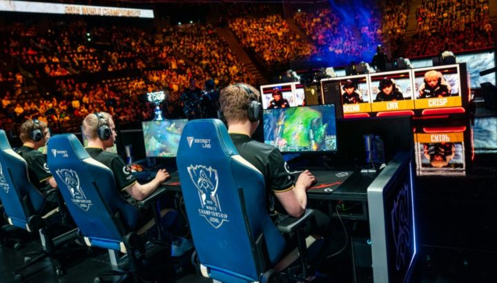
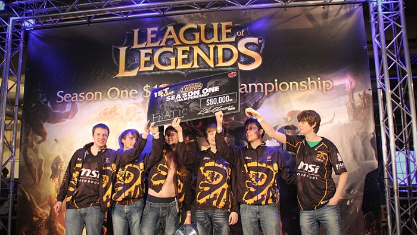
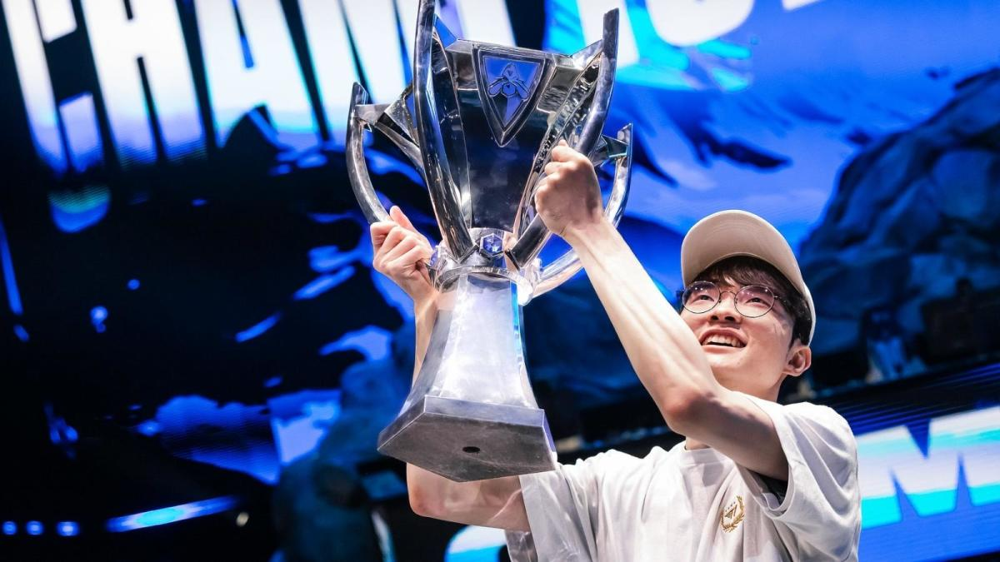
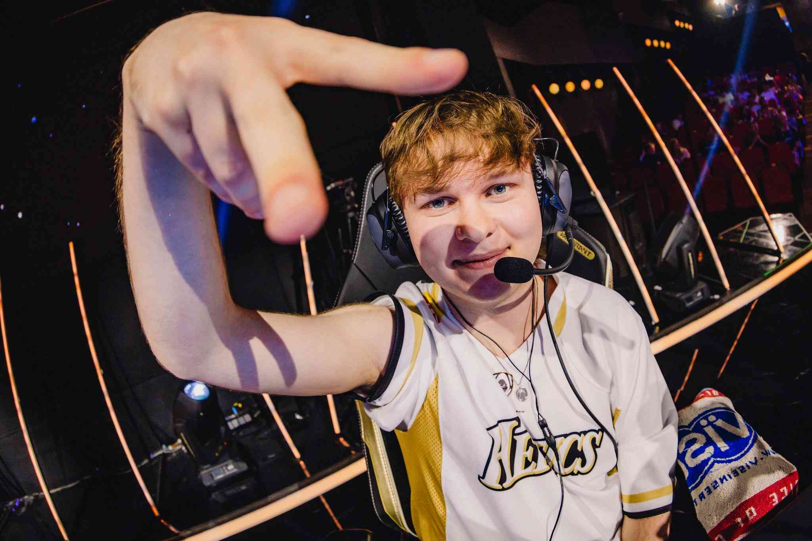

¿Que son los esports?
La escena competitiva de los videojuegos ha evolucionado dramáticamente en las últimas décadas, convirtiéndose en un fenómeno global que trasciende culturas y generaciones. Con el paso del tiempo, hemos presenciado hitos impresionantes que han definido su historia y transformado por completo la manera en que entendemos los videojuegos. Hoy, vamos a hablar de algunos de esos momentos inolvidables y de las figuras icónicas que, con su talento y dedicación, han dejado una huella imborrable en el apasionante mundo de los eSports.

El primer eSport
Para entender la evolución de los eSports, es crucial remontarnos al
comienzo. ¿Cuál fue el primer eSport? La respuesta nos lleva a 1972,
con el juego llamado "Spacewar!" y un evento en la Universidad de
Stanford. Este torneo, conocido como el primer evento competitivo de
videojuegos, premiaba al ganador con una suscripción anual a la
revista Rolling Stone. Desde ese momento, la chispa de los eSports
había encendido una llama que no se apagaría.

Fnatic gana el Mundial de LoL
En 2011, durante la primera temporada del Mundial de League of
Legends, un equipo europeo llamado Fnatic se alzó con el título de
campeón mundial. En ese entonces, los eSports estaban empezando a
ganarse un lugar en el corazón de los gamers alrededor del mundo.
Fnatic, liderado por xPeke, mostró un nivel de coordinación y
destreza que dejó asombrados a todos los espectadores. Este triunfo
fue un punto de inflexión para los eSports, consolidando a Fnatic
como uno de los equipos más legendarios en la historia de League of
Legends.

Faker y sus 5 Mundiales
Y no podemos hablar de eSports sin mencionar a uno de los jugadores
más icónicos de todos los tiempos: Faker. Este prodigio surcoreano
ha redefinido lo que significa ser un profesional en League of
Legends. Con su equipo, T1, Faker ha ganado cinco campeonatos
mundiales, estableciendo un récord y mostrando un nivel de juego que
parece casi sobrenatural. Su habilidad para adaptarse, su visión del
juego y su dedicación lo han convertido en una leyenda viva del
eSport.

Conclusión
La historia de los eSports está llena de momentos increíbles y
figuras inolvidables. Desde los primeros días con "Spacewar!" hasta
las emocionantes victorias de Fnatic y las hazañas legendarias de
Faker, el mundo de los eSports sigue creciendo y fascinando a
millones de personas en todo el globo. ¿Qué depara el futuro para
este apasionante universo? Sólo el tiempo lo dirá.
